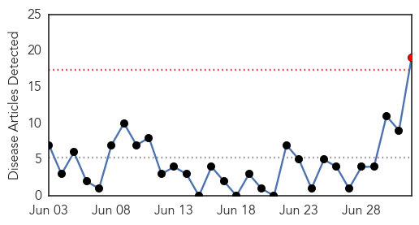
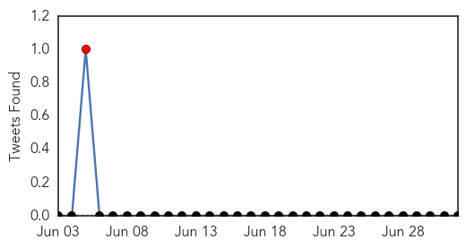
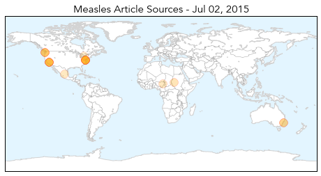
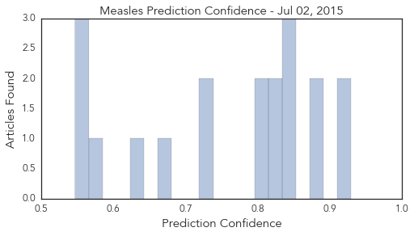

Measles
30-Day Web Trend
1 alerts, 0 warnings

30-Day Twitter Trend
1 alerts, 0 warnings

Article Locations
Article Confidences
Top Articles:
- 0.929
- Undetected measles led to death of Clallam County woman in her 20s
- 0.920
- Washington Woman Is First U.S. Measles Death in 12 Years
- 0.885
- Pupils Must Receive Measles Vaccines, US Rulers Have Enacted
- 0.881
- US announces first death from measles in 12 years
- 0.851
- U.S. sees first measles death since 2003
- 0.849
- Woman in Washington died from measles, becoming first U.S. death from disease in 12 years
- 0.841
- Seven women die of measles in Zamzam camp, North Darfur - Sudan
- 0.830
- Washington woman dies of measles; 1st US death since 2003
- 0.824
- US announces first death from measles in 12 years
- 0.798
- Clallam Co. woman dies of measles; 1st US death since 2003
- 0.796
- Washington woman dies of complications from measles
- 0.727
- First person dies of measles in the U.S. since 2003
- 0.722
- Woman's death by measles in Washington state is first in the US since 2003
- 0.668
- State health department reports death of woman from measles, first in U.S. since 2003
- 0.629
- Measles: First death in 12 years reported in Washington state
- 0.576
- Travel vaccines should be covered by OHIP: Toronto Public Health
- 0.547
- Public assured after Sydney dental scare
- 0.547
- Public assured after Sydney dental scare
- 0.547
- Public assured after Sydney dental scare
Top Tweets:
-
No tweets found for Jul 02, 2015
Dengue Fever
30-Day Web Trend
4 alerts, 5 warnings

30-Day Twitter Trend
3 alerts, 0 warnings

Article Locations

Article Confidences

Top Articles:
- 0.998
- Dengue fever on rise in Ho Chi Minh City
- 0.987
- Oxitec Mosquito Works to Control Aedes aegypti in Dengue Hotspot -- OXFORD, England, July 2, 2015 /PR Newswire UK/ --
- 0.987
- Oxitec Mosquito Works to Control Aedes aegypti in Dengue Hotspot -- OXFORD, England, July 2, 2015
- 0.981
- Health Crisis in Yemen
- 0.975
- Oxitec Mosquito Works to Control Aedes aegypti in Dengue Hotspot
- 0.948
- Delhi govt takes steps to curb mosquito-borne diseases
- 0.935
- S'pore team closer to creating 4-in-1 'cocktail' to fight dengue, Singapore News & Top Stories
- 0.931
- Dengue cases rising in N. Cotabato, drive vs virus intensified
- 0.927
- Vigilance urged as Taiwan sees more dengue fever cases: CDC
- 0.907
- Be Ready to Tackle Dengue Cases: Nadda
- 0.834
- Researchers Edge Closer to Cure for Dengue Fever
- 0.814
- With no plan in action this monsoon, can BMC tackle mosquito menace in Andheri?
- 0.794
- Houthi shells kill 18 in Yemen, dengue fever spreading
- 0.748
- Oxitec Mosquito Works To Control Aedes Aegypti In Dengue Hotspot
- 0.655
- Varsities to help fight dengue - Nation
Top Tweets:
-
No tweets found for Jul 02, 2015